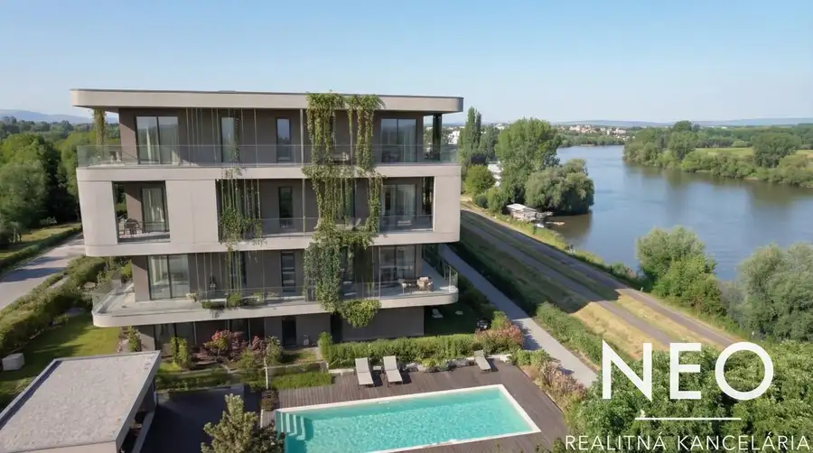
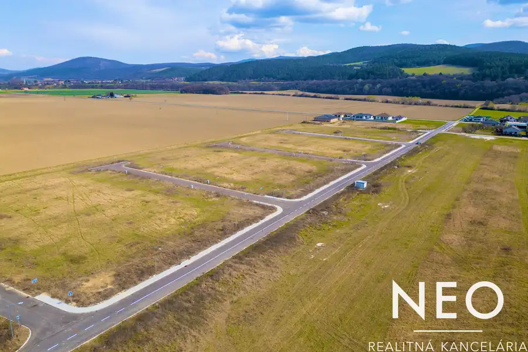
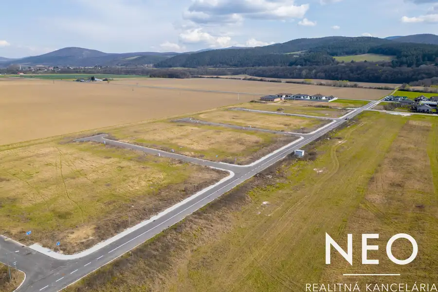

Aktuálna ponuka
8 nehnuteľností, predovšetkým byty, komerčné priestory, pozemky. Každá má vlastnú stránku s fotkami, popisom a mapou.
Prezrieť ponukuVeronika FojtíkováRealitná maklérka
Realitná maklérka · NEOREAL ,s.r.o.
Predaj a prenájom nehnuteľností · Trnava, Piešťany, Hrádok

 Komerčné priestoryNové7
105 000 €NEO | Priemyselná / skladová budova s priestranným pozemkom , obec Merašice
Merašice
380 m²
Ponúkame na predaj priemyselnú / skladovú budovu s výmerou 380 m², ktorá sa nachádza na pozemku s celkovou výmerou 959 m² v obci…
Komerčné priestoryNové7
2 100 000 €NEO | Objavte budovu, ktorá rastie s Vašimi ambíciami.
Trnava
1000 m²
Ponúkame na predaj modernú polyfunkčnú budovu situovanú vo vyhľadávanej lokalite Trnavy – Družba, na ulici Juraja Slottu, len niekoľko minút chôdze…
DomNové10
339 900 €NEO | Rozprávkový 4iz RD v obci Špačince , s priestranným pozemkom
Špačince
145 m²
Ponúkame na predaj 4 izbový rodinný dom v obci Špačince, s výmerou 145 m² na pozemku s celkovou výmerou 1 212 m² (pozemok tvorí 814 m² trávnatej…
Komerčné priestoryNové7
105 000 €NEO | Priemyselná / skladová budova s priestranným pozemkom , obec Merašice
Merašice
380 m²
Ponúkame na predaj priemyselnú / skladovú budovu s výmerou 380 m², ktorá sa nachádza na pozemku s celkovou výmerou 959 m² v obci…
Komerčné priestoryNové7
2 100 000 €NEO | Objavte budovu, ktorá rastie s Vašimi ambíciami.
Trnava
1000 m²
Ponúkame na predaj modernú polyfunkčnú budovu situovanú vo vyhľadávanej lokalite Trnavy – Družba, na ulici Juraja Slottu, len niekoľko minút chôdze…
DomNové10
339 900 €NEO | Rozprávkový 4iz RD v obci Špačince , s priestranným pozemkom
Špačince
145 m²
Ponúkame na predaj 4 izbový rodinný dom v obci Špačince, s výmerou 145 m² na pozemku s celkovou výmerou 1 212 m² (pozemok tvorí 814 m² trávnatej…
 Byt10
289 900 €NEO / Projekt LAKESIDE 36 / Piešťany, pri Sĺňave /priestranný 3-izbový byt s lodžiou
Piešťany
3-izbový84.26 m²2. podlažie
V Piešťanoch, pri vodnej nádrži Sĺňava, vzniká Lakeside36 – rezidenčný projekt definujúci nový štandard prémiového bývania .Komorný projekt s…
Byt10
289 900 €NEO / Projekt LAKESIDE 36 / Piešťany, pri Sĺňave /priestranný 3-izbový byt s lodžiou
Piešťany
3-izbový84.26 m²2. podlažie
V Piešťanoch, pri vodnej nádrži Sĺňava, vzniká Lakeside36 – rezidenčný projekt definujúci nový štandard prémiového bývania .Komorný projekt s…

Byt9 196 900 €NEO / Projekt LAKESIDE 36 / Piešťany, pri Sĺňave /priestranný 2-izbový byt s lodžiou Piešťany 2-izbový56.79 m²2. podlažie V Piešťanoch, pri vodnej nádrži Sĺňava, vzniká Lakeside36 – rezidenčný projekt definujúci nový štandard prémiového bývania .Komorný projekt s… Byt9
219 900 €NEO | ZicherHouse : exkluzívna investícia v srdci historickej Trnavy
Trnava
2-izbový35.85 m²2. podlažie
Projekt ZicherHouse predstavuje exkluzívnu rezidenčnú nehnuteľnosť situovanú v historickom centre Trnavy, na Divadelnej ulici. Od začiatku je…
Byt9
219 900 €NEO | ZicherHouse : exkluzívna investícia v srdci historickej Trnavy
Trnava
2-izbový35.85 m²2. podlažie
Projekt ZicherHouse predstavuje exkluzívnu rezidenčnú nehnuteľnosť situovanú v historickom centre Trnavy, na Divadelnej ulici. Od začiatku je…

Pozemok5 Cena dohodouNEO| Stavebné pozemky v obci Hrádok Hrádok 664 m² V obci Hrádok vzniká nová moderná štvrť Hrádok, ktorá ponúka na predaj 43 stavebných pozemkov. Ide o jedinečnú príležitosť získať pozemok v…
Pozemok4 Cena dohodouNEO | Stavebné pozemky v obci Hrádok Hrádok 706 m² V obci Hrádok vzniká nová moderná štvrť , ktorá ponúka na predaj 43 stavebných pozemkov. Ide o jedinečnú príležitosť získať pozemok v novovybudovanej…Tomuto výberu zatiaľ nezodpovedá žiadna ponuka. Napíšte mi, čo hľadáte.
Volám sa Veronika Fojtíková. Som realitná maklérka kancelárie NEOREAL ,s.r.o. a pôsobím predovšetkým v lokalitách Trnava, Piešťany, Hrádok a Merašice (Trnavský kraj).
8 nehnuteľností, predovšetkým byty, komerčné priestory, pozemky. Každá má vlastnú stránku s fotkami, popisom a mapou.
Prezrieť ponukuTrnava, Piešťany, Hrádok, Merašice, Špačince a okolie. Ponuku si môžete prezrieť podľa lokality.
Nehnuteľnosti v lokaliteOdhad trhovej ceny, príprava prezentácie, obhliadky, zmluvy a odovzdanie nehnuteľnosti.
Dohodnúť stretnutieKaždý špendlík je jedna nehnuteľnosť z mojej ponuky. Kliknite a pozrite sa.
© prispievatelia OpenStreetMap
Na čo sa pýtate najčastejšie, skôr než sa stretneme.
Odhad trhovej ceny vychádza z aktuálnych ponúk a predajov v lokalite, nie z cenníkových tabuliek. Podmienky Vám poviem pri prvom telefonáte.
Najprv obhliadka a odhad ceny, potom príprava prezentácie (fotografie, popis, inzercia), obhliadky so záujemcami, rezervačná zmluva, kúpna zmluva, návrh na vklad do katastra a odovzdanie nehnuteľnosti. O každom kroku viete vopred.
Najrýchlejšie cez WhatsApp alebo telefón. Termín stretnutia alebo obhliadky dohodneme podľa Vás.